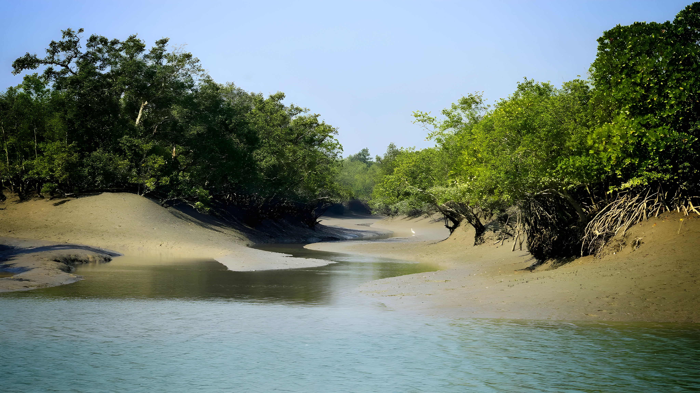

Introduction
Estuarine ecosystems are unique coastal ecosystems formed where freshwater from rivers mixes with saltwater from the sea. These regions are among the most productive ecosystems on Earth and serve as important transition zones between land and marine environments.
Key Features
Estuaries are characterized by fluctuating salinity levels, nutrient-rich waters, and dynamic environmental conditions. Tides play a major role in shaping estuarine ecosystems, influencing water flow, sediment movement, and species distribution.
Flora and Fauna
Common plant life in estuaries includes mangroves, salt marsh grasses, seagrasses, and algae. These plants provide shelter and breeding grounds for a wide variety of animals such as fish, crabs, oysters, shrimp, migratory birds, and amphibians.
Importance of Estuaries
Estuarine ecosystems act as natural filters by trapping pollutants and sediments before they reach the ocean. They protect coastlines from erosion, reduce the impact of storms, and support fisheries by serving as nurseries for many marine species.
Human Impact
Human activities such as urban development, industrial discharge, overfishing, and climate change threaten estuarine ecosystems. Pollution and habitat destruction reduce biodiversity and disrupt ecological balance.
Conservation
Conservation efforts include protecting wetlands, regulating pollution, restoring degraded estuaries, and promoting sustainable fishing practices. Public awareness and policy enforcement play a crucial role in preserving these valuable ecosystems.
Conclusion
Estuarine ecosystems are vital links between land and sea, supporting biodiversity, protecting coastlines, and sustaining human livelihoods. Their conservation is essential for maintaining ecological and economic balance.